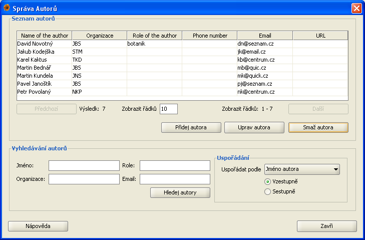
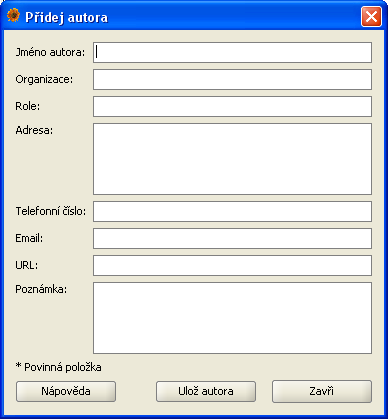

Správa autorů
Správa autorů umožňuje uživateli přidávat, upravovat a vyhledávat autory nálezů. Dialogové okno se správou autorů je možné otevřít pomocí menu
Data|Správa autorů.
Dialog pro správu autorů se skládá ze dvou základních částí:
- Seznam autorů - autoři, kteří jsou výsledkem posledního hledání
- Vyhledávání autorů- zde můžete zadat kritéria pro vyhledávání auutorů

Seznam autorů
Po úspěšném vyhledání jsou výsledky zobrazeny v této části formuláře. Výsledky jsou zobrazeny po stránkách, proto nejsou bezprostředně po vyhledání
zobrazeni všichni autoři. Pro přecházení mezi jednotlivými stránkami výsledků použijte tlačítek Předchozí a Následující které najdete pod tabulkou
se seznamem autorů. V případě, že chcete zobrazit více záznamů na jedné stránce, zadejte počet zobrazovaných záznamů do pole pod tabulkou se seznamem
autorů a stiskněte klávesu enter. Vedle tohoto pole se taktéž nachází informace celkovém počtu nalezných záznamů a rozsah který je právě zobrazen.
Tato část formuláře obsahuje taky tlačítka pro přidávání, úpravu a mazání autorů. Tlačitka Přidej autora a Uprav autora otevřou dialogové okno pro
přidávání/úpravu autorů (viz níže). Tlačítko Odeber autora smaže (po potvrzení uživatelem) vybraného autora. Pro úpravu nebo smazání autora musí být
daný autor vybraný v tabulce se seznamem autorů (v opačném případě systém uživatele upozorní že není vybraný žádný autor). Úpravy a mazání autorů
podléhá systému oprávnění v Plantlore. Pro podrobnější informace o systému oprávnění navštivte sekci pojednávající o systému oprávnění v Plantlore.
Vyhledávání autorů
Dialog pro správu autorů umožňuje vyhledávání podle 4 parametrů: Jméno autora, organizace, role a email. Výsledky můžou být uspořádané podle jména,
organizace, role, emailu, telefonního čísla nebo URL vzestupně nebo sestupně. Řetězec pro vyhledávání nemusí přesně odpovídat položce v databázi,
nalezeny budou všechny záznamy, u kterých je zadaná položka podřetězcem odpovídajíci položky v databázi. Po zadaní parametrů pro hledání se vyhledávaní
spouští tlačítkem Vyhledej autory.
Vyhledávání nerozlišuje malá a velká písmena.
Po otevření dialogového okna pro správu autorů se zobrazí všichni dostupní autoři. Pro pozdější zobrazení všech autorů stiskněte tlačítko Vyhledej autory bez
vyplnění vyhledávacích parametrů.
Přidávání a editace autorů
Dialogové okno pro přidávaní nebo editaci autora se otevírá z hlavního okna správy autorů tlačítkem Přidej autora resp. Uprav autora. Toto okno
obsahuje následující položky:
- Jméno autora - Celé jméno autora. Tato položka je povinná a nemůže zústat nevyplňená. Maximální délka této položky je 50 znaků.
- Organizace - Organizace nebo instituce, do které autor patří. Maximální délka této položky je 50 znaků.
- Role - Role autora v dané instituci. Maximální délka tétom položky je 30 znaků.
- Adresa - Adresa autora. Maximální délka této položky je 255 znaků.
- Telefon - Telefonní číslo autora. Maximální délka této položky je 20 znaků.
- Email - Emailová adresa autora. Maximální délka této položky je 100 znaků.
- URL - URL adresa (webstránka) autora. Maximální délka této položky je 255 znaků.
- Poznámka - Jakákoli další informace o autorovi. Tato položka můžze být dlouhá až 4096 znaků.

Pokud přidáváte nového autora, vyplňte jednotlivé položky a stiskněte tlačítko Ulož autora. Jediná povinná položka, která nemůže zůstat prázdná, je
Jméno autora.
V případě, že upravujete už existujícího autora, vyplní se parametry vybraného autora do formuláře a můžete je upravit. Pomocí tlačítka Ulož autora
se změny uloží do databáze. Jediná položka, která nesmí zůstat prázdná je tak jako u přidávání Jméno autora.